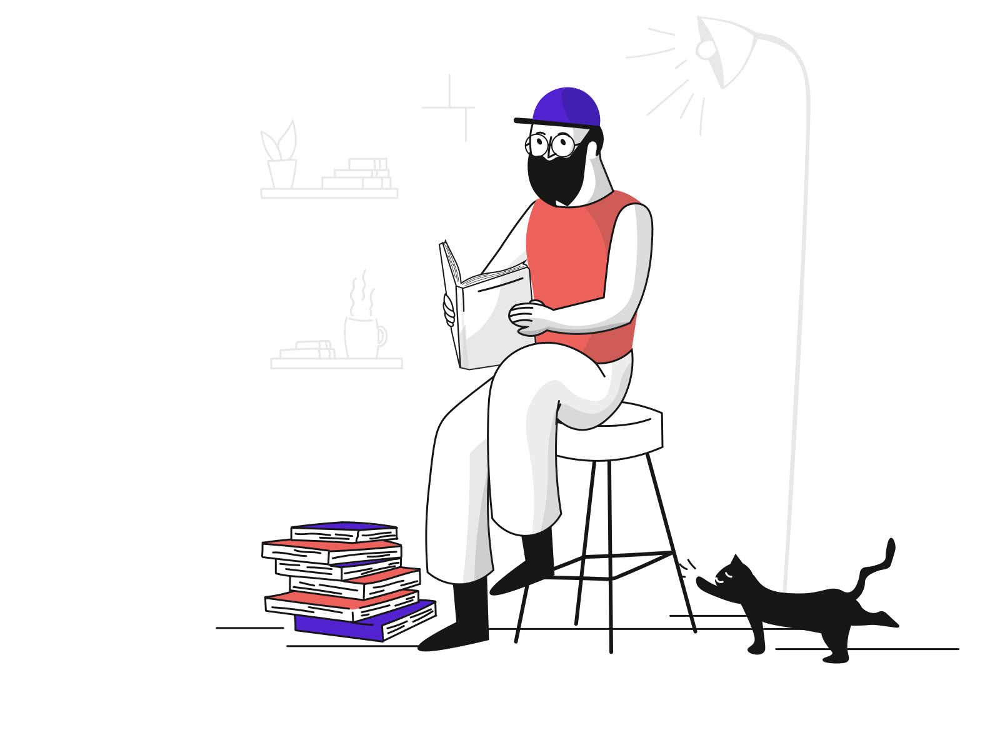

Hi, i'm Daniil
Scroll Down

It's Me
I am a creative and inventive junior frontend developer who is motivated to combine the art of design with the art of programming. I have a passion for translating UI/UX design frameworks into real code that will create the visual elements of an application. I'm used to working with UI/UX designers and bridging the gap between graphic design and technical implementation by taking an active role on both sides and defining what the app looks like as well as how it works. I strive to gain knowledge through self-education and full-time study at the University of BNTU (Faculty of Instrument Engineering), which I intend to graduate in 2023.
My plans
- Develop new user-facing features
- Build reusable code and libraries for future use
- Optimize application for maximum speed and scalability
- Assure that all user input is validated before submitting to back-end
- Collaborate with other team members and stakeholders
My Skills
- Proficient understanding of web markup, including HTML
- Basic understanding of server-side CSS pre-processing platforms, such as LESS and SASS
- Basic knowledge of image authoring tools, to be able to crop, resize, or perform small adjustments on an image. Familiarity with tools such as as Gimp or Photoshop is a plus
- Proficient understanding of cross-browser compatibility issues and ways to work around them
- Good understanding of SEO principles and ensuring that application will adhere to them
- Good knowledge of managing tasks with some useful tools like Trello
My Hobbies
I have a passion for several musical genres. And I love playing basketball. But I spend most of my free time studying everything behind webdev. Design, new trends, etc. Learning new technologies and working directly on the project gives me pleasure , so I can work most productively.
Skills Bar
HTML 65%
CSS 80%
JavaScript 50%
FlexBox 55%
Bootstrap 50%
In addition to the skills presented here, I have a very useful skill : I can quickly learn any technology and immediately apply it. I am also very easy to join any team and can also easily communicate with colleagues, which makes it very easy to conduct a project with me.